The next question is how to raise a domain event so it reaches its related event handlers. You can use multiple approaches.
Udi Dahan originally proposed (for example, in several related posts, such as Domain Events – Take 2) using a static class for managing and raising the events. This might include a static class named DomainEvents that would raise domain events immediately when it is called, using syntax like DomainEvents.Raise(Event myEvent). Jimmy Bogard wrote a blog post (Strengthening your domain: Domain Events) that recommends a similar approach.
However, when the domain events class is static, it also dispatches to handlers immediately. This makes testing and debugging more difficult, because the event handlers with side-effects logic are executed immediately after the event is raised. When you are testing and debugging, you want to focus on and just what is happening in the current aggregate classes; you do not want to suddenly be redirected to other event handlers for side effects related to other aggregates or application logic. This is why other approaches have evolved, as explained in the next section.
Instead of dispatching to a domain event handler immediately, a better approach is to add the domain events to a collection and then to dispatch those domain events right before or right after committing the transaction (as with SaveChanges in EF). (This approach was described by Jimmy Bogard in this post A better domain events pattern.)
Deciding if you send the domain events right before or right after committing the transaction is important, since it determines whether you will include the side effects as part of the same transaction or in different transactions. In the latter case, you need to deal with eventual consistency across multiple aggregates. This topic is discussed in the next section.
The deferred approach is what eShopOnContainers uses. First, you add the events happening in your entities into a collection or list of events per entity. That list should be part of the entity object, or even better, part of your base entity class, as shown in the following example of the Entity base class:
When you want to raise an event, you just add it to the event collection from code at any method of the aggregate-root entity.
The following code, part of the Order aggregate-root at eShopOnContainers, shows an example:
Notice that the only thing that the AddDomainEvent method is doing is adding an event to the list. No event is dispatched yet, and no event handler is invoked yet.
You actually want to dispatch the events later on, when you commit the transaction to the database. If you are using Entity Framework Core, that means in the SaveChanges method of your EF DbContext, as in the following code:
With this code, you dispatch the entity events to their respective event handlers.
The overall result is that you have decoupled the raising of a domain event (a simple add into a list in memory) from dispatching it to an event handler. In addition, depending on what kind of dispatcher you are using, you could dispatch the events synchronously or asynchronously.
Be aware that transactional boundaries come into significant play here. If your unit of work and transaction can span more than one aggregate (as when using EF Core and a relational database), this can work well. But if the transaction cannot span aggregates, such as when you are using a NoSQL database like Azure CosmosDB, you have to implement additional steps to achieve consistency. This is another reason why persistence ignorance is not universal; it depends on the storage system you use.
The question of whether to perform a single transaction across aggregates versus relying on eventual consistency across those aggregates is a controversial one. Many DDD authors like Eric Evans and Vaughn Vernon advocate the rule that one transaction = one aggregate and therefore argue for eventual consistency across aggregates. For example, in his book Domain-Driven Design, Eric Evans says this:
Any rule that spans Aggregates will not be expected to be up-to-date at all times. Through event processing, batch processing, or other update mechanisms, other dependencies can be resolved within some specific time. (page 128)
Vaughn Vernon says the following in Effective Aggregate Design. Part II: Making Aggregates Work Together:
Thus, if executing a command on one aggregate instance requires that additional business rules execute on one or more aggregates, use eventual consistency […] There is a practical way to support eventual consistency in a DDD model. An aggregate method publishes a domain event that is in time delivered to one or more asynchronous subscribers.
This rationale is based on embracing fine-grained transactions instead of transactions spanning many aggregates or entities. The idea is that in the second case, the number of database locks will be substantial in large-scale applications with high scalability needs. Embracing the fact that highly scalable applications need not have instant transactional consistency between multiple aggregates helps with accepting the concept of eventual consistency. Atomic changes are often not needed by the business, and it is in any case the responsibility of the domain experts to say whether particular operations need atomic transactions or not. If an operation always needs an atomic transaction between multiple aggregates, you might ask whether your aggregate should be larger or was not correctly designed.
However, other developers and architects like Jimmy Bogard are okay with spanning a single transaction across several aggregates—but only when those additional aggregates are related to side effects for the same original command. For instance, in A better domain events pattern, Bogard says this:
Typically, I want the side effects of a domain event to occur within the same logical transaction, but not necessarily in the same scope of raising the domain event […] Just before we commit our transaction, we dispatch our events to their respective handlers.
If you dispatch the domain events right before committing the original transaction, it is because you want the side effects of those events to be included in the same transaction. For example, if the EF DbContext SaveChanges method fails, the transaction will roll back all changes, including the result of any side effect operations implemented by the related domain event handlers. This is because the DbContext life scope is by default defined as “scoped.” Therefore, the DbContext object is shared across multiple repository objects being instantiated within the same scope or object graph. This coincides with the HttpRequest scope when developing Web API or MVC apps.
Actually, both approaches (single atomic transaction and eventual consistency) can be right. It really depends on your domain or business requirements and what the domain experts tell you. It also depends on how scalable you need the service to be (more granular transactions have less impact with regard to database locks). And it depends on how much investment you are willing to make in your code, since eventual consistency requires more complex code in order to detect possible inconsistencies across aggregates and the need to implement compensatory actions. Consider that if you commit changes to the original aggregate and afterwards, when the events are being dispatched, if there is an issue and the event handlers cannot commit their side effects, you will have inconsistencies between aggregates.
A way to allow compensatory actions would be to store the domain events in additional database tables so they can be part of the original transaction. Afterwards, you could have a batch process that detects inconsistencies and runs compensatory actions by comparing the list of events with the current state of the aggregates. The compensatory actions are part of a complex topic that will require deep analysis from your side, which includes discussing it with the business user and domain experts.
In any case, you can choose the approach you need. But the initial deferred approach—raising the events before committing, so you use a single transaction—is the simplest approach when using EF Core and a relational database. It is easier to implement and valid in many business cases. It is also the approach used in the ordering microservice in eShopOnContainers.
But how do you actually dispatch those events to their respective event handlers? What’s the _mediator object you see in the previous example? It has to do with the techniques and artifacts you use to map between events and their event handlers.
Once you’re able to dispatch or publish the events, you need some kind of artifact that will publish the event, so that every related handler can get it and process side effects based on that event.
One approach is a real messaging system or even an event bus, possibly based on a service bus as opposed to in-memory events. However, for the first case, real messaging would be overkill for processing domain events, since you just need to process those events within the same process (that is, within the same domain and application layer).
Another way to map events to multiple event handlers is by using types registration in an IoC container so you can dynamically infer where to dispatch the events. In other words, you need to know what event handlers need to get a specific event. Figure 7-16 shows a simplified approach for this approach.
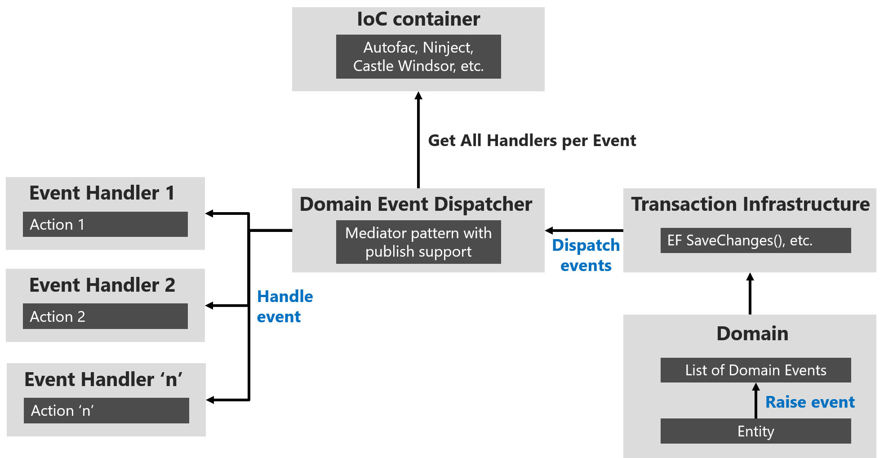
Figure 7-16. Domain event dispatcher using IoC
You can build all the plumbing and artifacts to implement that approach by yourself. However, you can also use available libraries like MediatR that uses your IoC container under the covers. You can therefore directly use the predefined interfaces and the mediator object’s publish/dispatch methods.
In code, you first need to register the event handler types in your IoC container, as shown in the following example at eShopOnContainers Ordering microservice:
The code first identifies the assembly that contains the domain event handlers by locating the assembly that holds any of the handlers (using typeof(ValidateOrAddBuyerAggregateWhenXxxx), but you could have chosen any other event handler to locate the assembly). Since all the event handlers implement the IAsyncNotificationHandler interface, the code then just searches for those types and registers all the event handlers.
When you use MediatR, each event handler must use an event type that is provided on the generic parameter of the INotificationHandler interface, as you can see in the following code:
Based on the relationship between event and event handler, which can be considered the subscription, the MediatR artifact can discover all the event handlers for each event and trigger each one of those event handlers.
Finally, the event handler usually implements application layer code that uses infrastructure repositories to obtain the required additional aggregates and to execute side-effect domain logic. The following domain event handler code at eShopOnContainers, shows an implementation example.
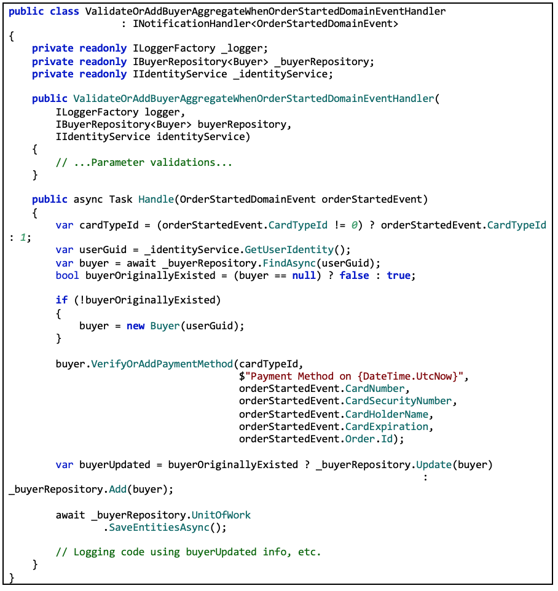The previous domain event handler code is considered application layer code because it uses infrastructure repositories, as explained in the next section on the infrastructure-persistence layer. Event handlers could also use other infrastructure components.
Finally, it’s important to mention that you might sometimes want to propagate events across multiple microservices. That propagation is an integration event, and it could be published through an event bus from any specific domain event handler.
As stated, use domain events to explicitly implement side effects of changes within your domain. To use DDD terminology, use domain events to explicitly implement side effects across one or multiple aggregates. Additionally, and for better scalability and less impact on database locks, use eventual consistency between aggregates within the same domain.
Data persistence components provide access to the data hosted within the boundaries of a microservice (that is, a microservice’s database). They contain the actual implementation of components such as repositories and Unit of Work classes, like custom Entity Framework (EF) DbContext objects. EF DbContext implements both, the Repository and the Unit of Work patterns.
Repositories are classes or components that encapsulate the logic required to access data sources. They centralize common data access functionality, providing better maintainability and decoupling the infrastructure or technology used to access databases from the domain model layer. If you use an Object-Relational Mapper (ORM) like Entity Framework, the code that must be implemented is simplified, thanks to LINQ and strong typing. This lets you focus on the data persistence logic rather than on data access plumbing.
The Repository pattern is a well-documented way of working with a data source. In the book Patterns of Enterprise Application Architecture, Martin Fowler describes a repository as follows:
A repository performs the tasks of an intermediary between the domain model layers and data mapping, acting in a similar way to a set of domain objects in memory. Client objects declaratively build queries and send them to the repositories for answers. Conceptually, a repository encapsulates a set of objects stored in the database and operations that can be performed on them, providing a way that is closer to the persistence layer. Repositories, also, support the purpose of separating, clearly and in one direction, the dependency between the work domain and the data allocation or mapping.
For each aggregate or aggregate root, you should create one repository class. In a microservice based on Domain-Driven Design (DDD) patterns, the only channel you should use to update the database should be the repositories. This is because they have a one-to-one relationship with the aggregate root, which controls the aggregate’s invariants and transactional consistency. It’s okay to query the database through other channels (as you can do following a CQRS approach), because queries don’t change the state of the database. However, the transactional area (that is, the updates) must always be controlled by the repositories and the aggregate roots.
Basically, a repository allows you to populate data in memory that comes from the database in the form of the domain entities. Once the entities are in memory, they can be changed and then persisted back to the database through transactions.
As noted earlier, if you’re using the CQS/CQRS architectural pattern, the initial queries are performed by side queries out of the domain model, performed by simple SQL statements using Dapper. This approach is much more flexible than repositories because you can query and join any tables you need, and these queries aren’t restricted by rules from the aggregates. That data goes to the presentation layer or client app.
If the user makes changes, the data to be updated comes from the client app or presentation layer to the application layer (such as a Web API service). When you receive a command in a command handler, you use repositories to get the data you want to update from the database. You update it in memory with the data passed with the commands, and you then add or update the data (domain entities) in the database through a transaction.
It’s important to emphasize again that you should only define one repository for each aggregate root, as shown in Figure 7-17. To achieve the goal of the aggregate root to maintain transactional consistency between all the objects within the aggregate, you should never create a repository for each table in the database.
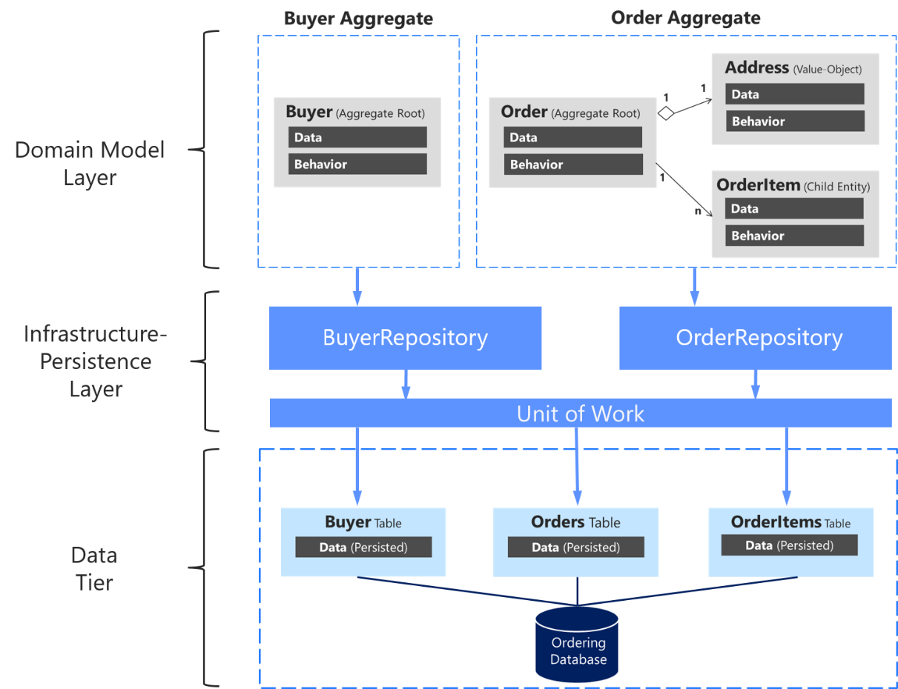
Figure 7-17. The relationship between repositories, aggregates, and database tables
It can be valuable to implement your repository design in such a way that it enforces the rule that only aggregate roots should have repositories. You can create a generic or base repository type that constrains the type of entities it works with to ensure they have the IAggregateRoot marker interface.
Thus, each repository class implemented at the infrastructure layer implements its own contract or interface, as shown in the following code:
Each specific repository interface implements the generic IRepository interface:
However, a better way to have the code enforce the convention that each repository is related to a single aggregate is to implement a generic repository type. That way, it’s explicit that you’re using a repository to target a specific aggregate. That can be easily done by implementing a generic IRepository base interface, as in the following code:
The Repository pattern allows you to easily test your application with unit tests. Remember that unit tests only test your code, not infrastructure, so the repository abstractions make it easier to achieve that goal.
As noted in an earlier section, it’s recommended that you define and place the repository interfaces in the domain model layer so the application layer, such as your Web API microservice, doesn’t depend directly on the infrastructure layer where you’ve implemented the actual repository classes. By doing this and using Dependency Injection in the controllers of your Web API, you can implement mock repositories that return fake data instead of data from the database. This decoupled approach allows you to create and run unit tests that focus the logic of your application without requiring connectivity to the database.
Connections to databases can fail and, more importantly, running hundreds of tests against a database is bad for two reasons. First, it can take a long time because of the large number of tests. Second, the database records might change and impact the results of your tests, so that they might not be consistent. Testing against the database isn’t a unit test but an integration test. You should have many unit tests running fast, but fewer integration tests against the databases.
In terms of separation of concerns for unit tests, your logic operates on domain entities in memory. It assumes the repository class has delivered those. Once your logic modifies the domain entities, it assumes the repository class will store them correctly. The important point here is to create unit tests against your domain model and its domain logic. Aggregate roots are the main consistency boundaries in DDD.
The repositories implemented in eShopOnContainers rely on EF Core’s DbContext implementation of the Repository and Unit of Work patterns using its change tracker, so they don’t duplicate this functionality.
A data access object directly performs data access and persistence operations against storage. A repository marks the data with the operations you want to perform in the memory of a unit of work object (as in EF when using the DbContext class), but these updates aren’t performed immediately to the database.
A unit of work is referred to as a single transaction that involves multiple insert, update, or delete operations. In simple terms, it means that for a specific user action, such as a registration on a website, all the insert, update, and delete operations are handled in a single transaction. This is more efficient than handling multiple database transactions in a chattier way.
These multiple persistence operations are performed later in a single action when your code from the application layer commands it. The decision about applying the in-memory changes to the actual database storage is typically based on the Unit of Work pattern. In EF, the Unit of Work pattern is implemented as the DbContext.
In many cases, this pattern or way of applying operations against the storage can increase application performance and reduce the possibility of inconsistencies. It also reduces transaction blocking in the database tables, because all the intended operations are committed as part of one transaction. This is more efficient in comparison to executing many isolated operations against the database. Therefore, the selected ORM can optimize the execution against the database by grouping several update actions within the same transaction, as opposed to many small and separate transaction executions.
Custom repositories are useful for the reasons cited earlier, and that is the approach for the ordering microservice in eShopOnContainers. However, it isn’t an essential pattern to implement in a DDD design or even in general .NET development.
For instance, Jimmy Bogard, when providing direct feedback for this guide, said the following:
This’ll probably be my biggest feedback. I’m really not a fan of repositories, mainly because they hide the important details of the underlying persistence mechanism. It’s why I go for MediatR for commands, too. I can use the full power of the persistence layer, and push all that domain behavior into my aggregate roots. I don’t usually want to mock my repositories – I still need to have that integration test with the real thing. Going CQRS meant that we didn’t really have a need for repositories any more.
Repositories might be useful, but they are not critical for your DDD design, in the way that the Aggregate pattern and rich domain model are. Therefore, use the Repository pattern or not, as you see fit. Anyway, you’ll be using the repository pattern whenever you use EF Core although, in this case, the repository covers the whole microservice or bounded context.
When you use relational databases such as SQL Server, Oracle, or PostgreSQL, a recommended approach is to implement the persistence layer based on Entity Framework (EF). EF supports LINQ and provides strongly typed objects for your model, as well as simplified persistence into your database.
Entity Framework has a long history as part of the .NET Framework. When you use .NET Core, you should also use Entity Framework Core, which runs on Windows or Linux in the same way as .NET Core. EF Core is a complete rewrite of Entity Framework, implemented with a much smaller footprint and important improvements in performance.
Entity Framework (EF) Core is a lightweight, extensible, and cross-platform version of the popular Entity Framework data access technology. It was introduced with .NET Core in mid-2016.
Since an introduction to EF Core is already available in Microsoft documentation, here we simply provide links to that information.
From a DDD point of view, an important capability of EF is the ability to use POCO domain entities, also known in EF terminology as POCO code-first entities. If you use POCO domain entities, your domain model classes are persistence-ignorant, following the Persistence Ignorance and the Infrastructure Ignorance principles.
Per DDD patterns, you should encapsulate domain behavior and rules within the entity class itself, so it can control invariants, validations, and rules when accessing any collection. Therefore, it is not a good practice in DDD to allow public access to collections of child entities or value objects. Instead, you want to expose methods that control how and when your fields and property collections can be updated, and what behavior and actions should occur when that happens.
Since EF Core 1.1, to satisfy those DDD requirements, you can have plain fields in your entities instead of public properties. If you do not want an entity field to be externally accessible, you can just create the attribute or field instead of a property. You can also use private property setters.
In a similar way, you can now have read-only access to collections by using a public property typed as IReadOnlyCollection, which is backed by a private field member for the collection (like a List) in your entity that relies on EF for persistence. Previous versions of Entity Framework required collection properties to support ICollection, which meant that any developer using the parent entity class could add or remove items through its property collections. That possibility would be against the recommended patterns in DDD.
You can use a private collection while exposing a read-only IReadOnlyCollection object, as shown in the following code example:
Note that the OrderItems property can only be accessed as read-only using IReadOnlyCollection. This type is read-only so it is protected against regular external updates.
EF Core provides a way to map the domain model to the physical database without “contaminating” the domain model. It is pure .NET POCO code, because the mapping action is implemented in the persistence layer. In that mapping action, you need to configure the fields-to-database mapping. In the following example of the OnModelCreating method from OrderingContext and the OrderEntityTypeConfiguration class, the call to SetPropertyAccessMode tells EF Core to access the OrderItems property through its field.
When you use fields instead of properties, the OrderItem entity is persisted just as if it had a List property. However, it exposes a single accessor, the AddOrderItem method, for adding new items to the order. As a result, behavior and data are tied together and will be consistent throughout any application code that uses the domain model.
At the implementation level, a repository is simply a class with data persistence code coordinated by a unit of work (DBContext in EF Core) when performing updates, as shown in the following class:
Note that the IBuyerRepository interface comes from the domain model layer as a contract. However, the repository implementation is done at the persistence and infrastructure layer.
The EF DbContext comes through the constructor through Dependency Injection. It is shared between multiple repositories within the same HTTP request scope, thanks to its default lifetime (ServiceLifetime.Scoped) in the IoC container (which can also be explicitly set with services.AddDbContext<>).
Within each repository class, you should put the persistence methods that update the state of entities contained by its related aggregate. Remember there is one-to-one relationship between an aggregate and its related repository. Consider that an aggregate root entity object might have embedded child entities within its EF graph. For example, a buyer might have multiple payment methods as related child entities.
Since the approach for the ordering microservice in eShopOnContainers is also based on CQS/CQRS, most of the queries are not implemented in custom repositories. Developers have the freedom to create the queries and joins they need for the presentation layer without the restrictions imposed by aggregates, custom repositories per aggregate, and DDD in general. Most of the custom repositories suggested by this guide have several update or transactional methods but just the query methods needed to get data to be updated. For example, the BuyerRepository repository implements a FindAsync method, because the application needs to know whether a particular buyer exists before creating a new buyer related to the order.
However, the real query methods to get data to send to the presentation layer or client apps are implemented, as mentioned, in the CQRS queries based on flexible queries using Dapper.
The Entity Framework DbContext class is based on the Unit of Work and Repository patterns, and can be used directly from your code, such as from an ASP.NET Core MVC controller. That is the way you can create the simplest code, as in the CRUD catalog microservice in eShopOnContainers. In cases where you want the simplest code possible, you might want to directly use the DbContext class, as many developers do.
However, implementing custom repositories provides several benefits when implementing more complex microservices or applications. The Unit of Work and Repository patterns are intended to encapsulate the infrastructure persistence layer so it is decoupled from the application and domain model layers. Implementing these patterns can facilitate the use of mock repositories simulating access to the database.
In Figure 7-18 you can see the differences between not using repositories (directly using the EF DbContext) versus using repositories which make it easier to mock those repositories.
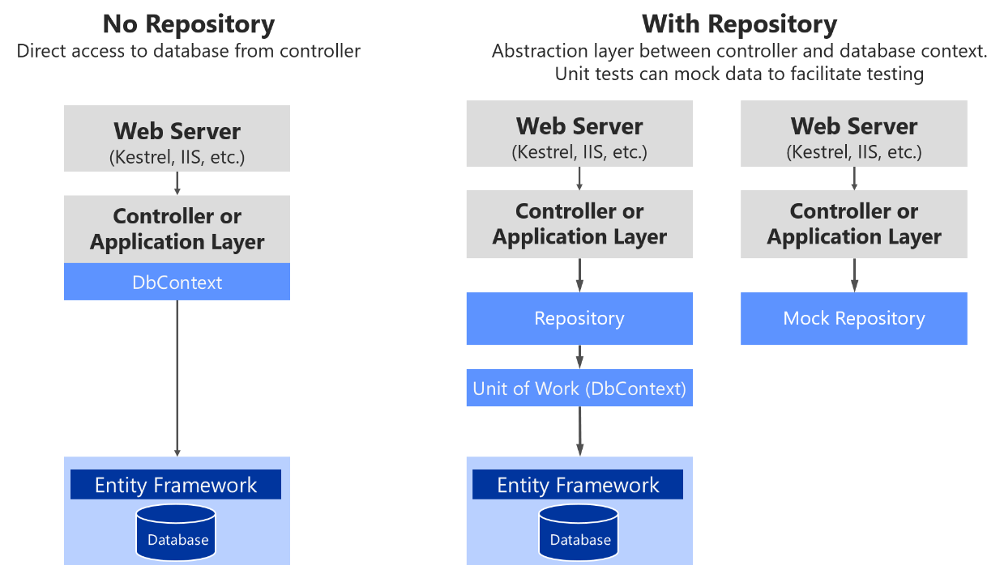
Figure 7-18. Using custom repositories versus a plain DbContext
There are multiple alternatives when mocking. You could mock just repositories or you could mock a whole unit of work. Usually mocking just the repositories is enough, and the complexity to abstract and mock a whole unit of work is usually not needed.
Later, when we focus on the application layer, you will see how Dependency Injection works in ASP.NET Core and how it is implemented when using repositories.
In short, custom repositories allow you to test code more easily with unit tests that are not impacted by the data tier state. If you run tests that also access the actual database through the Entity Framework, they are not unit tests but integration tests, which are a lot slower.
If you were using DbContext directly, you would have to mock it or to run unit tests by using an in-memory SQL Server with predictable data for unit tests. But mocking the DbContext or controlling fake data requires more work than mocking at the repository level. Of course, you could always test the MVC controllers.
The DbContext object (exposed as an IUnitOfWork object) should be shared among multiple repositories within the same HTTP request scope. For example, this is true when the operation being executed must deal with multiple aggregates, or simply because you are using multiple repository instances. It is also important to mention that the IUnitOfWork interface is part of your domain layer, not an EF Core type.
In order to do that, the instance of the DbContext object has to have its service lifetime set to ServiceLifetime.Scoped. This is the default lifetime when registering a DbContext with services.AddDbContext in your IoC container from the ConfigureServices method of the Startup.cs file in your ASP.NET Core Web API project. The following code illustrates this.
The DbContext instantiation mode should not be configured as ServiceLifetime.Transient or ServiceLifetime.Singleton.
In a similar way, repository’s lifetime should usually be set as scoped (InstancePerLifetimeScope in Autofac). It could also be transient (InstancePerDependency in Autofac), but your service will be more efficient in regards memory when using the scoped lifetime.
Note that using the singleton lifetime for the repository could cause you serious concurrency problems when your DbContext is set to scoped (InstancePerLifetimeScope) lifetime (the default lifetimes for a DBContext).
Table mapping identifies the table data to be queried from and saved to the database. Previously you saw how domain entities (for example, a product or order domain) can be used to generate a related database schema. EF is strongly designed around the concept of conventions. Conventions address questions like “What will the name of a table be?” or “What property is the primary key?” Conventions are typically based on conventional names—for example, it is typical for the primary key to be a property that ends with Id.
By convention, each entity will be set up to map to a table with the same name as the DbSet property that exposes the entity on the derived context. If no DbSet value is provided for the given entity, the class name is used.
There are many additional EF Core conventions, and most of them can be changed by using either data annotations or Fluent API, implemented within the OnModelCreating method.
Data annotations must be used on the entity model classes themselves, which is a more intrusive way from a DDD point of view. This is because you are contaminating your model with data annotations related to the infrastructure database. On the other hand, Fluent API is a convenient way to change most conventions and mappings within your data persistence infrastructure layer, so the entity model will be clean and decoupled from the persistence infrastructure.
As mentioned, in order to change conventions and mappings, you can use the OnModelCreating method in the DbContext class.
The ordering microservice in eShopOnContainers implements explicit mapping and configuration, when needed, as shown in the following code.
You could set all the Fluent API mappings within the same OnModelCreating method, but it is advisable to partition that code and have multiple configuration classes, one per entity, as shown in the example. Especially for particularly large models, it is advisable to have separate configuration classes for configuring different entity types.
The code in the example shows a few explicit declarations and mapping. However, EF Core conventions do many of those mappings automatically, so the actual code you would need in your case might be smaller.
An interesting aspect of code in the preceding example is that it uses the Hi/Lo algorithm as the key generation strategy.
The Hi/Lo algorithm is useful when you need unique keys before committing changes. As a summary, the Hi-Lo algorithm assigns unique identifiers to table rows while not depending on storing the row in the database immediately. This lets you start using the identifiers right away, as happens with regular sequential database IDs.
The Hi/Lo algorithm describes a mechanism for getting a batch of unique IDs from a related database sequence. These IDs are safe to use because the database guarantees the uniqueness, so there will be no collisions between users. This algorithm is interesting for these reasons:
EF Core supports HiLo with the ForSqlServerUseSequenceHiLo method, as shown in the preceding example.
With this feature, available since EF Core 1.1, you can directly map columns to fields. It is possible to not use properties in the entity class, and just to map columns from a table to fields. A common use for that would be private fields for any internal state that do not need to be accessed from outside the entity.
You can do this with single fields or also with collections, like a List<> field. This point was mentioned earlier when we discussed modeling the domain model classes, but here you can see how that mapping is performed with the PropertyAccessMode.Field configuration highlighted in the previous code.
Shadow properties in EF Core are properties that do not exist in your entity class model. The values and states of these properties are maintained purely in the ChangeTracker class at the infrastructure level.
As introduced earlier in the design section, the Query Specification pattern is a Domain-Driven Design pattern designed as the place where you can put the definition of a query with optional sorting and paging logic.
The Query Specification pattern defines a query in an object. For example, in order to encapsulate a paged query that searches for some products you can create a PagedProduct specification that takes the necessary input parameters (pageNumber, pageSize, filter, etc.). Then, within any Repository method (usually a List() overload) it would accept an IQuerySpecification and run the expected query based on that specification.
An example of a generic Specification interface is the following code from eShopOnweb.
Then, the implementation of a generic specification base class is the following.
The following specification loads a single basket entity given either the basket’s ID or the ID of the buyer to whom the basket belongs. It will eagerly load the basket’s Items collection.
And finally, you can see below how a generic EF Repository can use such a specification to filter and eager-load data related to a given entity type T.
In addition to encapsulating filtering logic, the specification can specify the shape of the data to be returned, including which properties to populate.
Although we don’t recommend to return IQueryable from a repository, it’s perfectly fine to use them within the repository to build up a set of results. You can see this approach used in the List method above, which uses intermediate IQueryable expressions to build up the query’s list of includes before executing the query with the specification’s criteria on the last line.
When you use NoSQL databases for your infrastructure data tier, you typically do not use an ORM like Entity Framework Core. Instead you use the API provided by the NoSQL engine, such as Azure Cosmos DB, MongoDB, Cassandra, RavenDB, CouchDB, or Azure Storage Tables.
However, when you use a NoSQL database, especially a document-oriented database like Azure Cosmos DB, CouchDB, or RavenDB, the way you design your model with DDD aggregates is partially similar to how you can do it in EF Core, in regards to the identification of aggregate roots, child entity classes, and value object classes. But, ultimately, the database selection will impact in your design.
When you use a document-oriented database, you implement an aggregate as a single document, serialized in JSON or another format. However, the use of the database is transparent from a domain model code point of view. When using a NoSQL database, you still are using entity classes and aggregate root classes, but with more flexibility than when using EF Core because the persistence is not relational.
The difference is in how you persist that model. If you implemented your domain model based on POCO entity classes, agnostic to the infrastructure persistence, it might look like you could move to a different persistence infrastructure, even from relational to NoSQL. However, that should not be your goal. There are always constraints and trade-offs in the different database technologies, so you will not be able to have the same model for relational or NoSQL databases. Changing persistence models is not a trivial task, because transactions and persistence operations will be very different.
For example, in a document-oriented database, it is okay for an aggregate root to have multiple child collection properties. In a relational database, querying multiple child collection properties is not easily optimized, because you get a UNION ALL SQL statement back from EF. Having the same domain model for relational databases or NoSQL databases is not simple, and you should not try to do it. You really have to design your model with an understanding of how the data is going to be used in each particular database.
A benefit when using NoSQL databases is that the entities are more denormalized, so you do not set a table mapping. Your domain model can be more flexible than when using a relational database.
When you design your domain model based on aggregates, moving to NoSQL and document-oriented databases might be even easier than using a relational database, because the aggregates you design are similar to serialized documents in a document-oriented database. Then you can include in those “bags” all the information you might need for that aggregate.
For instance, the following JSON code is a sample implementation of an order aggregate when using a document-oriented database. It is similar to the order aggregate we implemented in the eShopOnContainers sample, but without using EF Core underneath.
Azure Cosmos DB is Microsoft’s globally distributed database service for mission-critical applications. Azure Cosmos DB provides turn-key global distribution, elastic scaling of throughput and storage worldwide, single-digit millisecond latencies at the 99th percentile, five well-defined consistency levels, and guaranteed high availability, all backed by industry-leading SLAs. Azure Cosmos DB automatically indexes data without requiring you to deal with schema and index management. It is multi-model and supports document, key-value, graph, and columnar data models.
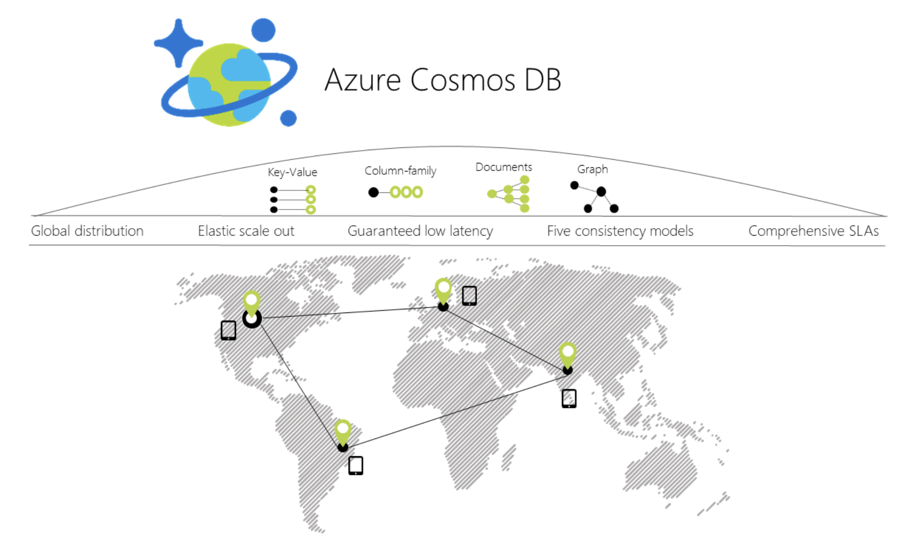 :::{custom-style=Figure-Caption} Figure 7-19. Azure Cosmos DB global distribution :::
When you use a C# model to implement the aggregate to be used by the Azure Cosmos DB API, the aggregate can be similar to the C# POCO classes used with EF Core. The difference is in the way to use them from the application and infrastructure layers, as in the following code:
You can see that the way you work with your domain model can be similar to the way you use it in your domain model layer when the infrastructure is EF. You still use the same aggregate root methods to ensure consistency, invariants, and validations within the aggregate.
However, when you persist your model into the NoSQL database, the code and API change dramatically compared to EF Core code or any other code related to relational databases.
You can access Azure Cosmos DB databases from .NET code running in containers, like from any other .NET application. For instance, the Locations.API and Marketing.API microservices in eShopOnContainers are implemented so they can consume Azure Cosmos DB databases.
However, there’s a limitation in Azure Cosmos DB from a Docker development environment point of view. Even when there’s a on-premises Azure Cosmos DB Emulator able to run in a local development machine (like a PC), as of late 2017, it just supports Windows, not Linux.
There is also the possibility to run this emulator on Docker, but just on Windows Containers, not with Linux Containers. That is an initial handicap for the development environment if your application is deployed as Linux containers, since, currently, you cannot deploy Linux and Windows Containers on Docker for Windows at the same time. Either all containers being deployed have to be for Linux or for Windows.
The ideal and more straightforward deployment for a dev/test solution is to be able to deploy your database systems as containers along with your custom containers so your dev/test environments are always consistent.
Cosmos DB databases support MongoDB API for .NET as well as the native MongoDB wire protocol. This means that by using existing drivers, your application written for MongoDB can now communicate with Cosmos DB and use Cosmos DB databases instead of MongoDB databases, as shown in Figure 7-20.
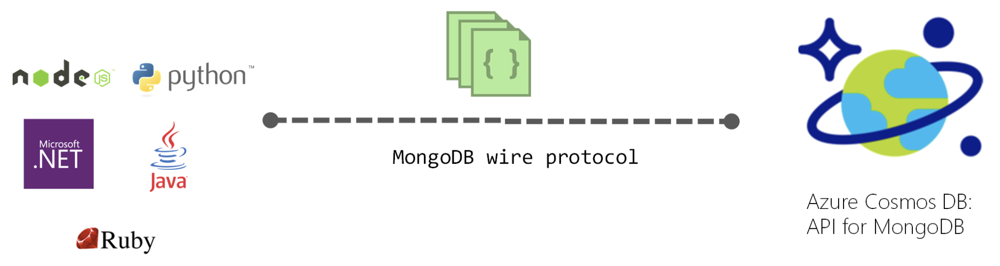 :::{custom-style=Figure-Caption} Figure 7-20. Using MongoDB API and protocol to access Azure Cosmos DB :::
This is a very convenient approach for proof of concepts in Docker environments with Linux containers because the MongoDB Docker image is a multi-arch image that supports Docker Linux containers and Docker Windows containers.
As shown in the following image, by using the MongoDB API, eShopOnContainers supports MongoDB Linux and Windows containers for the local development environment but then, you can move to a scalable, PaaS cloud solution as Azure Cosmos DB by simply changing the MongoDB connection string to point to Azure Cosmos DB.
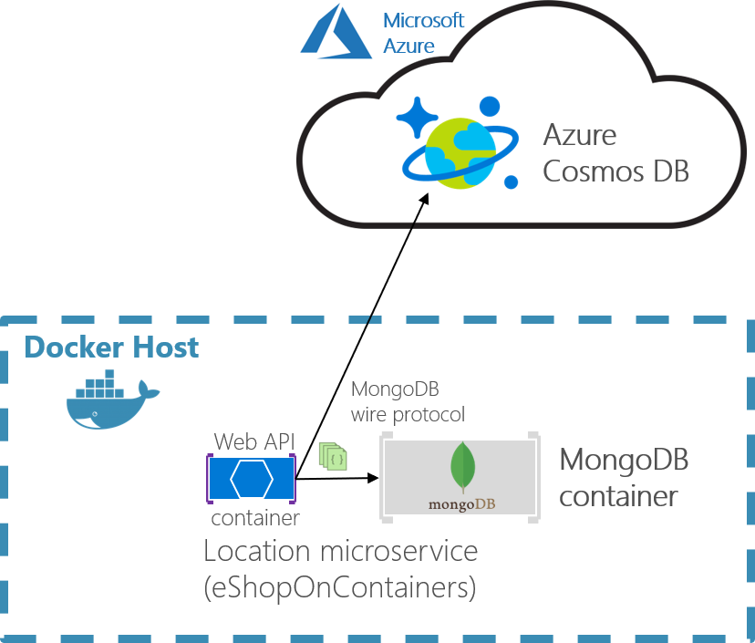 :::{custom-style=Figure-Caption} Figure 7-21. eShopOnContainers using MongoDB containers for dev-env or Azure Cosmos DB for production :::
The production Azure Cosmos DB would be running in Azure’s cloud as a PaaS and scalable service.
Your custom .NET Core containers can run on a local development Docker host (that is using Docker for Windows in a Windows 10 machine) or be deployed into a production environment, like Kubernetes in Azure AKS or Azure Service Fabric. In this second environment, you would deploy only the .NET Core custom containers but not the MongoDB container since you’d be using Azure Cosmos DB in the cloud for handling the data in production.
A clear benefit of using the MongoDB API is that your solution could run in both database engines, MongoDB or Azure Cosmos DB, so migrations to different environments should be easy. However, sometimes it is worthwhile to use a native API (that is the native Cosmos DB API) in order to take full advantage of the capabilities of a specific database engine.
For further comparison between simply using MongoDB versus Cosmos DB in the cloud, see the Benefits of using Azure Cosmos DB in this page.
In eShopOnContainers, we’re using MongoDB API because our priority was fundamentally to have a consistent dev/test environment using a NoSQL database that could also work with Azure Cosmos DB.
However, if you planning to use MongoDB API to access Azure Cosmos DB in Azure for production applications, you should analyze the differences in capabilities and performance when using MongoDB API to access Azure Cosmos DB databases compared to using the native Azure Cosmos DB API. If it is similar you can use MongoDB API and you get the benefit of supporting two NoSQL database engines at the same time.
You could also use MongoDB clusters as the production database in Azure’s cloud, too, with MongoDB Azure Service. But that is not a PaaS service provided by Microsoft. In this case, Azure is just hosting that solution coming from MongoDB.
Basically, this is just a disclaimer stating that you shouldn’t always use MongoDB API against Azure Cosmos DB, as we did in eShopOnContainers because it was a convenient choice for Linux containers. The decision should be based on the specific needs and tests you need to do for your production application.
MongoDB API for .NET is based on NuGet packages that you need to add to your projects, like in the Locations.API project shown in the the following figure.
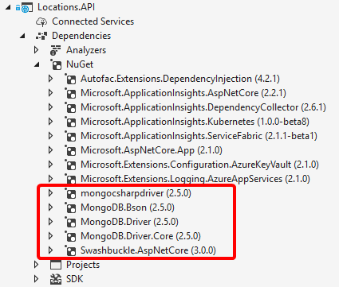
Figure 7-22. MongoDB API NuGet packages references in a .NET Core project
Let’s investigate the code in the following sections.
First, you need to define a model that will hold the data coming from the database in your application’s memory space. Here’s an example of the model used for Locations at eShopOnContainers.
You can see there are a few attributes and types coming from the MongoDB NuGet packages.
NoSQL databases are usually very well suited for working with non-relational hierarchical data. In this example, we are using MongoDB types especially made for geo-locations, like GeoJson2DGeographicCoordinates.
In eShopOnContainers, we have created a custom database context where we implement the code to retrieve the database and the MongoCollections, as in the following code.
In C# code, like Web API controllers or custom Repositories implementation, you can write similar code to the following when querying through the MongoDB API. Note that the _context object is an instance of the previous LocationsContext class.
When creating a MongoClient object, it needs a fundamental parameter which is precisely the ConnectionString parameter pointing to the right database. In the case of eShopOnContainers, the connection string can point to a local MongoDB Docker container or to a “production” Azure Cosmos DB database. That connection string comes from the environment variables defined in the docker-compose.override.yml files used when deploying with docker-compose or Visual Studio, as in the following yml code.
The ConnectionString environment variable is resolved this way: If the ESHOP_AZURE_COSMOSDB global variable is defined in the .env file with the Azure Cosmos DB connection string, it will use it to access the Azure Cosmos DB database in the cloud. If it’s not defined, it will take the mongodb://nosql.data value and use the development mongodb container.
The following code shows the .env file with the Azure Cosmos DB connection string global environment variable, as implemented in eShopOnContainers:
You should uncomment the ESHOP_AZURE_COSMOSDB line and update it with your Azure Cosmos DB connection string obtained from the Azure portal as explained in Connect a MongoDB application to Azure Cosmos DB.
If the ESHOP_AZURE_COSMOSDB global variable is empty, meaning that it is commented out in the .env file, then the container uses a default MongoDB connection string pointing to the local MongoDB container deployed in eShopOnContainers which is named nosql.data and was defined at the docker-compose file, as shown in the following .yml code.
SOLID principles are critical techniques to be used in any modern and mission-critical application, such as developing a microservice with DDD patterns. SOLID is an acronym that groups five fundamental principles:
SOLID is more about how you design your application or microservice internal layers and about decoupling dependencies between them. It is not related to the domain, but to the application’s technical design. The final principle, the Dependency Inversion principle, allows you to decouple the infrastructure layer from the rest of the layers, which allows a better decoupled implementation of the DDD layers.
Dependency Injection (DI) is one way to implement the Dependency Inversion principle. It is a technique for achieving loose coupling between objects and their dependencies. Rather than directly instantiating collaborators, or using static references (that is, using new…), the objects that a class needs in order to perform its actions are provided to (or “injected into”) the class. Most often, classes will declare their dependencies via their constructor, allowing them to follow the Explicit Dependencies principle. Dependency Injection is usually based on specific Inversion of Control (IoC) containers. ASP.NET Core provides a simple built-in IoC container, but you can also use your favorite IoC container, like Autofac or Ninject.
By following the SOLID principles, your classes will tend naturally to be small, well-factored, and easily tested. But how can you know if too many dependencies are being injected into your classes? If you use DI through the constructor, it will be easy to detect that by just looking at the number of parameters for your constructor. If there are too many dependencies, this is generally a sign (a code smell) that your class is trying to do too much, and is probably violating the Single Responsibility principle.
It would take another guide to cover SOLID in detail. Therefore, this guide requires you to have only a minimum knowledge of these topics.
As mentioned previously, the application layer can be implemented as part of the artifact (assembly) you are building, such as within a Web API project or an MVC web app project. In the case of a microservice built with ASP.NET Core, the application layer will usually be your Web API library. If you want to separate what is coming from ASP.NET Core (its infrastructure plus your controllers) from your custom application layer code, you could also place your application layer in a separate class library, but that is optional.
For instance, the application layer code of the ordering microservice is directly implemented as part of the Ordering.API project (an ASP.NET Core Web API project), as shown in Figure 7-23.
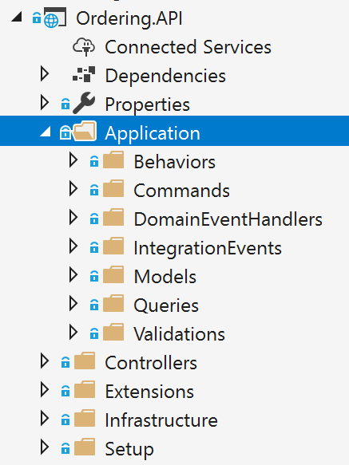
Figure 7-23. The application layer in the Ordering.API ASP.NET Core Web API project
ASP.NET Core includes a simple built-in IoC container (represented by the IServiceProvider interface) that supports constructor injection by default, and ASP.NET makes certain services available through DI. ASP.NET Core uses the term service for any of the types you register that will be injected through DI. You configure the built-in container’s services in the ConfigureServices method in your application’s Startup class. Your dependencies are implemented in the services that a type needs and that you register in the IoC container.
Typically, you want to inject dependencies that implement infrastructure objects. A very typical dependency to inject is a repository. But you could inject any other infrastructure dependency that you may have. For simpler implementations, you could directly inject your Unit of Work pattern object (the EF DbContext object), because the DBContext is also the implementation of your infrastructure persistence objects.
In the following example, you can see how .NET Core is injecting the required repository objects through the constructor. The class is a command handler, which we will cover in the next section.
The class uses the injected repositories to execute the transaction and persist the state changes. It does not matter whether that class is a command handler, an ASP.NET Core Web API controller method, or a DDD Application Service. It is ultimately a simple class that uses repositories, domain entities, and other application coordination in a fashion similar to a command handler. Dependency Injection works the same way for all the mentioned classes, as in the example using DI based on the constructor.
Before you use the objects injected through constructors, you need to know where to register the interfaces and classes that produce the objects injected into your application classes through DI. (Like DI based on the constructor, as shown previously.)
When you use the built-in IoC container provided by ASP.NET Core, you register the types you want to inject in the ConfigureServices method in the Startup.cs file, as in the following code:
The most common pattern when registering types in an IoC container is to register a pair of types—an interface and its related implementation class. Then when you request an object from the IoC container through any constructor, you request an object of a certain type of interface. For instance, in the previous example, the last line states that when any of your constructors have a dependency on IMyCustomRepository (interface or abstraction), the IoC container will inject an instance of the MyCustomSQLServerRepository implementation class.
When using DI in .NET Core, you might want to be able to scan an assembly and automatically register its types by convention. This feature is not currently available in ASP.NET Core. However, you can use the Scrutor library for that. This approach is convenient when you have dozens of types that need to be registered in your IoC container.
You can also use additional IoC containers and plug them into the ASP.NET Core pipeline, as in the ordering microservice in eShopOnContainers, which uses Autofac. When using Autofac you typically register the types via modules, which allow you to split the registration types between multiple files depending on where your types are, just as you could have the application types distributed across multiple class libraries.
For example, the following is the Autofac application module for the Ordering.API Web API project with the types you will want to inject.
Autofac also has a feature to scan assemblies and register types by name conventions.
The registration process and concepts are very similar to the way you can register types with the built-in ASP.NET Core IoC container, but the syntax when using Autofac is a bit different.
In the example code, the abstraction IOrderRepository is registered along with the implementation class OrderRepository. This means that whenever a constructor is declaring a dependency through the IOrderRepository abstraction or interface, the IoC container will inject an instance of the OrderRepository class.
The instance scope type determines how an instance is shared between requests for the same service or dependency. When a request is made for a dependency, the IoC container can return the following:
In the DI-through-constructor example shown in the previous section, the IoC container was injecting repositories through a constructor in a class. But exactly where were they injected? In a simple Web API (for example, the catalog microservice in eShopOnContainers), you inject them at the MVC controllers’ level, in a controller constructor, as part of the request pipeline of ASP.NET Core. However, in the initial code of this section (the CreateOrderCommandHandler class from the Ordering.API service in eShopOnContainers), the injection of dependencies is done through the constructor of a particular command handler. Let us explain what a command handler is and why you would want to use it.
The Command pattern is intrinsically related to the CQRS pattern that was introduced earlier in this guide. CQRS has two sides. The first area is queries, using simplified queries with the Dapper micro ORM, which was explained previously. The second area is commands, which are the starting point for transactions, and the input channel from outside the service.
As shown in Figure 7-24, the pattern is based on accepting commands from the client side, processing them based on the domain model rules, and finally persisting the states with transactions.

Figure 7-24. High-level view of the commands or “transactional side” in a CQRS pattern
A command is a request for the system to perform an action that changes the state of the system. Commands are imperative, and should be processed just once.
Since commands are imperatives, they are typically named with a verb in the imperative mood (for example, “create” or “update”), and they might include the aggregate type, such as CreateOrderCommand. Unlike an event, a command is not a fact from the past; it is only a request, and thus may be refused.
Commands can originate from the UI as a result of a user initiating a request, or from a process manager when the process manager is directing an aggregate to perform an action.
An important characteristic of a command is that it should be processed just once by a single receiver. This is because a command is a single action or transaction you want to perform in the application. For example, the same order creation command should not be processed more than once. This is an important difference between commands and events. Events may be processed multiple times, because many systems or microservices might be interested in the event.
In addition, it is important that a command be processed only once in case the command is not idempotent. A command is idempotent if it can be executed multiple times without changing the result, either because of the nature of the command, or because of the way the system handles the command.
It is a good practice to make your commands and updates idempotent when it makes sense under your domain’s business rules and invariants. For instance, to use the same example, if for any reason (retry logic, hacking, etc.) the same CreateOrder command reaches your system multiple times, you should be able to identify it and ensure that you do not create multiple orders. To do so, you need to attach some kind of identity in the operations and identify whether the command or update was already processed.
You send a command to a single receiver; you do not publish a command. Publishing is for events that state a fact—that something has happened and might be interesting for event receivers. In the case of events, the publisher has no concerns about which receivers get the event or what they do it. But domain or integration events are a different story already introduced in previous sections.
A command is implemented with a class that contains data fields or collections with all the information that is needed in order to execute that command. A command is a special kind of Data Transfer Object (DTO), one that is specifically used to request changes or transactions. The command itself is based on exactly the information that is needed for processing the command, and nothing more.
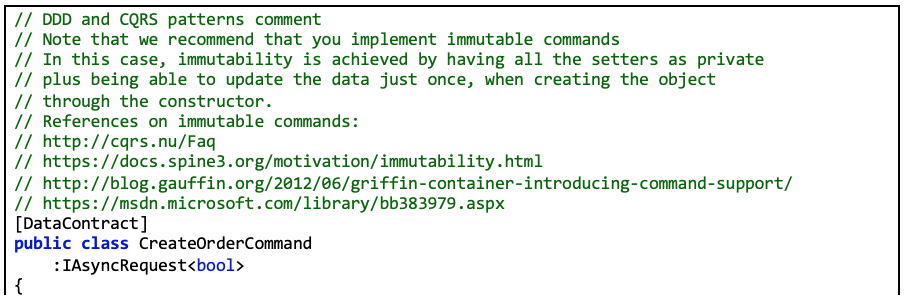The following example shows the simplified CreateOrderCommand class. This is an immutable command that is used in the ordering microservice in eShopOnContainers.
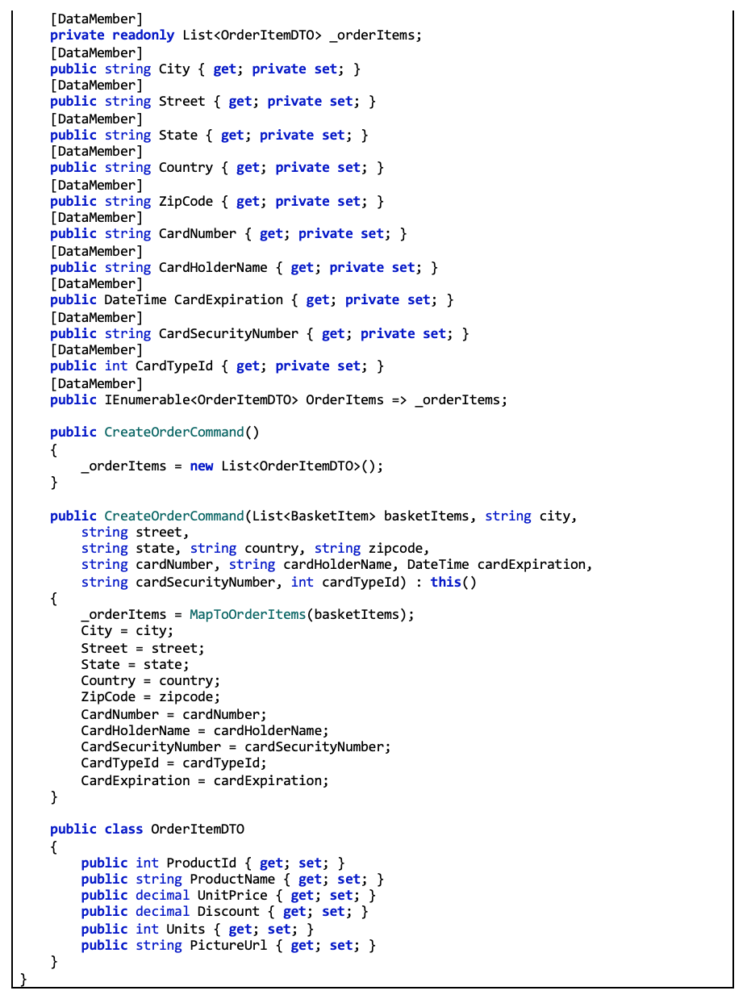Basically, the command class contains all the data you need for performing a business transaction by using the domain model objects. Thus, commands are simply data structures that contain read-only data, and no behavior. The command’s name indicates its purpose. In many languages like C#, commands are represented as classes, but they are not true classes in the real object-oriented sense.
As an additional characteristic, commands are immutable, because the expected usage is that they are processed directly by the domain model. They do not need to change during their projected lifetime. In a C# class, immutability can be achieved by not having any setters or other methods that change internal state.
Bear in mind that if you intend or expect commands will be going through a serializing/deserializing process, the properties must have private setter, and the [DataMemeber] (or [JsonProperty]) attribute, otherwise the deserializer will not be able to reconstruct the object at destination with the required values.
For example, the command class for creating an order is probably similar in terms of data to the order you want to create, but you probably do not need the same attributes. For instance, CreateOrderCommand does not have an order ID, because the order has not been created yet.
Many command classes can be simple, requiring only a few fields about some state that needs to be changed. That would be the case if you are just changing the status of an order from “in process” to “paid” or “shipped” by using a command similar to the following:
Some developers make their UI request objects separate from their command DTOs, but that is just a matter of preference. It is a tedious separation with not much added value, and the objects are almost exactly the same shape. For instance, in eShopOnContainers, some commands come directly from the client side.
You should implement a specific command handler class for each command. That is how the pattern works, and it is where you will use the command object, the domain objects, and the infrastructure repository objects. The command handler is in fact the heart of the application layer in terms of CQRS and DDD. However, all the domain logic should be contained within the domain classes—within the aggregate roots (root entities), child entities, or domain services, but not within the command handler, which is a class from the application layer.
The command handler class offers a strong stepping stone in the way to achieve the Single Resposibility Principle (SRP) mentioned in a previous section.
A command handler receives a command and obtains a result from the aggregate that is used. The result should be either successful execution of the command, or an exception. In the case of an exception, the system state should be unchanged.
The command handler usually takes the following steps:
Typically, a command handler deals with a single aggregate driven by its aggregate root (root entity). If multiple aggregates should be impacted by the reception of a single command, you could use domain events to propagate states or actions across multiple aggregates.
The important point here is that when a command is being processed, all the domain logic should be inside the domain model (the aggregates), fully encapsulated and ready for unit testing. The command handler just acts as a way to get the domain model from the database, and as the final step, to tell the infrastructure layer (repositories) to persist the changes when the model is changed. The advantage of this approach is that you can refactor the domain logic in an isolated, fully encapsulated, rich, behavioral domain model without changing code in the application or infrastructure layers, which are the plumbing level (command handlers, Web API, repositories, etc.).
When command handlers get complex, with too much logic, that can be a code smell. Review them, and if you find domain logic, refactor the code to move that domain behavior to the methods of the domain objects (the aggregate root and child entity).
As an example of a command handler class, the following code shows the same CreateOrderCommandHandler class that you saw at the beginning of this chapter. In this case, we want to highlight the Handle method and the operations with the domain model objects/aggregates.
These are additional steps a command handler should take:
The next question is how to invoke a command handler. You could manually call it from each related ASP.NET Core controller. However, that approach would be too coupled and is not ideal.
The other two main options, which are the recommended options, are:
As shown in Figure 7-25, in a CQRS approach you use an intelligent mediator, similar to an in-memory bus, which is smart enough to redirect to the right command handler based on the type of the command or DTO being received. The single black arrows between components represent the dependencies between objects (in many cases, injected through DI) with their related interactions.
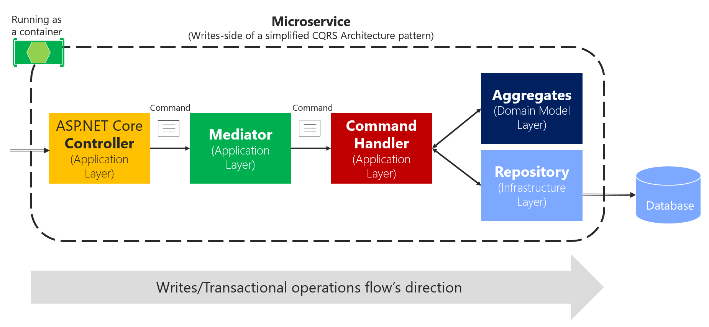
Figure 7-25. Using the Mediator pattern in process in a single CQRS microservice
The reason that using the Mediator pattern makes sense is that in enterprise applications, the processing requests can get complicated. You want to be able to add an open number of cross-cutting concerns like logging, validations, audit, and security. In these cases, you can rely on a mediator pipeline (see Mediator pattern) to provide a means for these extra behaviors or cross-cutting concerns.
A mediator is an object that encapsulates the “how” of this process: it coordinates execution based on state, the way a command handler is invoked, or the payload you provide to the handler. With a mediator component you can apply cross-cutting concerns in a centralized and transparent way by applying decorators (or pipeline behaviors since MediatR 3). For more information, see the Decorator pattern.
Decorators and behaviors are similar to Aspect Oriented Programming (AOP), only applied to a specific process pipeline managed by the mediator component. Aspects in AOP that implement cross-cutting concerns are applied based on aspect weavers injected at compilation time or based on object call interception. Both typical AOP approaches are sometimes said to work “like magic,” because it is not easy to see how AOP does its work. When dealing with serious issues or bugs, AOP can be difficult to debug. On the other hand, these decorators/behaviors are explicit and applied only in the context of the mediator, so debugging is much more predictable and easy.
For example, in the eShopOnContainers ordering microservice, we implemented two sample behaviors, a LogBehavior class and a ValidatorBehavior class. The implementation of the behaviors is explained in the next section by showing how eShopOnContainers uses MediatR 3 behaviors.
Another choice is to use asynchronous messages based on brokers or message queues, as shown in Figure 7-26. That option could also be combined with the mediator component right before the command handler.
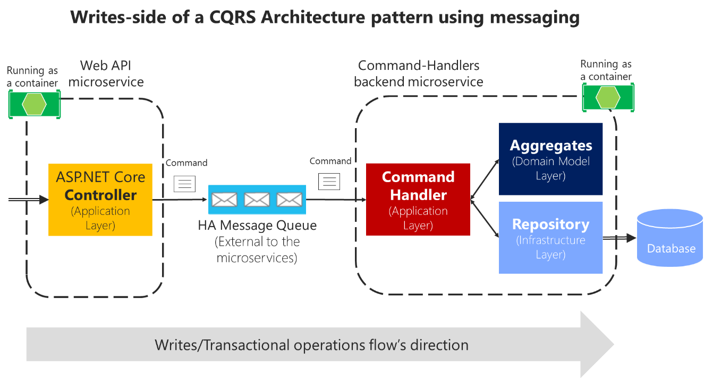
Figure 7-26. Using message queues (out of process and inter-process communication) with CQRS commands
Using message queues to accept the commands can further complicate your command’s pipeline, because you will probably need to split the pipeline into two processes connected through the external message queue. Still, it should be used if you need to have improved scalability and performance based on asynchronous messaging. Consider that in the case of Figure 7-26, the controller just posts the command message into the queue and returns. Then the command handlers process the messages at their own pace. That is a great benefit of queues: the message queue can act as a buffer in cases when hyper scalability is needed, such as for stocks or any other scenario with a high volume of ingress data.
However, because of the asynchronous nature of message queues, you need to figure out how to communicate with the client application about the success or failure of the command’s process. As a rule, you should never use “fire and forget” commands. Every business application needs to know if a command was processed successfully, or at least validated and accepted.
Thus, being able to respond to the client after validating a command message that was submitted to an asynchronous queue adds complexity to your system, as compared to an in-process command process that returns the operation’s result after running the transaction. Using queues, you might need to return the result of the command process through other operation result messages, which will require additional components and custom communication in your system.
Additionally, async commands are one-way commands, which in many cases might not be needed, as is explained in the following interesting exchange between Burtsev Alexey and Greg Young in an online conversation:
[Burtsev Alexey] I find lots of code where people use async command handling or one way command messaging without any reason to do so (they are not doing some long operation, they are not executing external async code, they do not even cross application boundary to be using message bus). Why do they introduce this unnecessary complexity? And actually, I haven’t seen a CQRS code example with blocking command handlers so far, though it will work just fine in most cases.
[Greg Young] […] an asynchronous command doesn’t exist; it’s actually another event. If I must accept what you send me and raise an event if I disagree, it’s no longer you telling me to do something [that is, it’s not a command]. It’s you telling me something has been done. This seems like a slight difference at first, but it has many implications.
Asynchronous commands greatly increase the complexity of a system, because there is no simple way to indicate failures. Therefore, asynchronous commands are not recommended other than when scaling requirements are needed or in special cases when communicating the internal microservices through messaging. In those cases, you must design a separate reporting and recovery system for failures.
In the initial version of eShopOnContainers, we decided to use synchronous command processing, started from HTTP requests and driven by the Mediator pattern. That easily allows you to return the success or failure of the process, as in the CreateOrderCommandHandler implementation.
In any case, this should be a decision based on your application’s or microservice’s business requirements.
As a sample implementation, this guide proposes using the in-process pipeline based on the Mediator pattern to drive command ingestion and route commands, in memory, to the right command handlers. The guide also proposes applying behaviors in order to separate cross-cutting concerns.
For implementation in .NET Core, there are multiple open-source libraries available that implement the Mediator pattern. The library used in this guide is the MediatR open-source library (created by Jimmy Bogard), but you could use another approach. MediatR is a small and simple library that allows you to process in-memory messages like a command, while applying decorators or behaviors.
Using the Mediator pattern helps you to reduce coupling and to isolate the concerns of the requested work, while automatically connecting to the handler that performs that work—in this case, to command handlers.
Another good reason to use the Mediator pattern was explained by Jimmy Bogard when reviewing this guide:
I think it might be worth mentioning testing here – it provides a nice consistent window into the behavior of your system. Request-in, response-out. We’ve found that aspect quite valuable in building consistently behaving tests.
First, let’s look at a sample WebAPI controller where you actually would use the mediator object. If you were not using the mediator object, you would need to inject all the dependencies for that controller, things like a logger object and others. Therefore, the constructor would be quite complicated. On the other hand, if you use the mediator object, the constructor of your controller can be a lot simpler, with just a few dependencies instead of many dependencies if you had one per cross-cutting operation, as in the following example:
You can see that the mediator provides a clean and lean Web API controller constructor. In addition, within the controller methods, the code to send a command to the mediator object is almost one line:
In eShopOnContainers, a more advanced example than the above is submitting a CreateOrderCommand object from the Ordering microservice. But since the Ordering business process is a bit more complex and, in our case, it actually starts in the Basket microservice, this action of submitting the CreateOrderCommand object is performed from an integration-event handler named >UserCheckoutAcceptedIntegrationEvent.cs](https://github.com/dotnet-architecture/eShopOnContainers/blob/dev/src/Services/Ordering/Ordering.API/Application/IntegrationEvents/EventHandling/UserCheckoutAcceptedIntegrationEventHandler.cs) instead of a simple WebAPI controller called from the client App as in the previous simpler example.
Nevertheless, the action of submitting the Command to MediatR is pretty similar, as shown in the following code.
However, this case is also a little bit more advanced because we’re also implementing idempotent commands. The CreateOrderCommand process should be idempotent, so if the same message comes duplicated through the network, because of any reason, like retries, the same business order will be processed just once.
This is implemented by wrapping the business command (in this case CreateOrderCommand) and embedding it into a generic IdentifiedCommand which is tracked by an ID of every message coming through the network that has to be idempotent.
In the code below, you can see that the IdentifiedCommand is nothing more than a DTO with and ID plus the wrapped business command object.
Then the CommandHandler for the IdentifiedCommand named IdentifiedCommandHandler.cs will basically check if the ID coming as part of the message already exists in a table. If it already exists, that command won’t be processed again, so it behaves as an idempotent command. That infrastructure code is performed by the _requestManager.ExistAsync method call below.
Since the IdentifiedCommand acts like a business command’s envelope, when the business command needs to be processed because it is not a repeated Id, then it takes that inner business command and re-submits it to Mediator, as in the last part of the code shown above when running _mediator.Send(message.Command), from the IdentifiedCommandHandler.cs.
When doing that, it will link and run the business command handler, in this case, the CreateOrderCommandHandler which is running transactions against the Ordering database, as shown in the following code.
In order for MediatR to be aware of your command handler classes, you need to register the mediator classes and the command handler classes in your IoC container. By default, MediatR uses Autofac as the IoC container, but you can also use the built-in ASP.NET Core IoC container or any other container supported by MediatR.
The following code shows how to register Mediator’s types and commands when using Autofac modules.
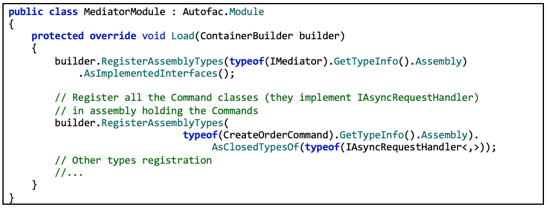This is where “the magic happens” with MediatR.
Because each command handler implements the generic IAsyncRequestHandler interface, when registering the assemblies, the code registers with RegisteredAssemblyTypes all the types marked as IAsyncRequestHandler while relating the CommandHandlers with their Commands, thanks to the relationship stated at the CommandHandler class, as in the following example:
That is the code that correlates commands with command handlers. The handler is just a simple class, but it inherits from RequestHandler, where T is the command type, and MediatR makes sure it is invoked with the correct payload (the command).
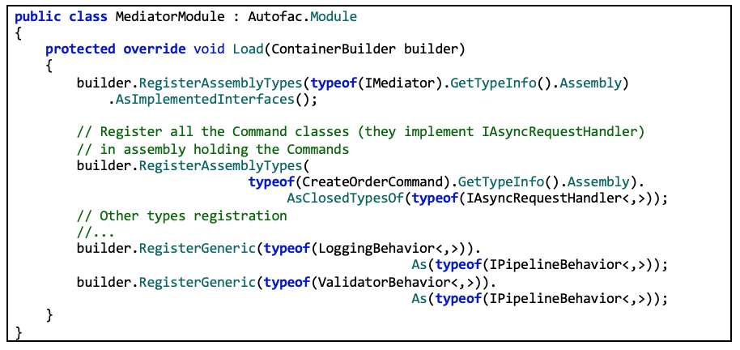There is one more thing: being able to apply cross-cutting concerns to the mediator pipeline. You can also see at the end of the Autofac registration module code how it registers a behavior type, specifically, a custom LoggingBehavior class and a ValidatorBehavior class. But you could add other custom behaviors, too.
That LoggingBehavior class can be implemented as the following code, which logs information about the command handler being executed and whether it was successful or not.
Just by implementing this behavior class and by registering it in the pipeline (in the MediatorModule above), all the commands processed through MediatR will be logging information about the execution.
The eShopOnContainers ordering microservice also applies a second behavior for basic validations, the ValidatorBehavior class that relies on the FluentValidation library, as shown in the following code:
The behavior here is raising an exception if validation fails, but you could also return a result object, containing the command result if it succeeded or the validation messages in case it didn’t. This would probably make it easier to display validation results to the user.
Then, based on the FluentValidation library, we created validation for the data passed with CreateOrderCommand, as in the following code:
You could create additional validations. This is a very clean and elegant way to implement your command validations.
In a similar way, you could implement other behaviors for additional aspects or cross-cutting concerns that you want to apply to commands when handling them.